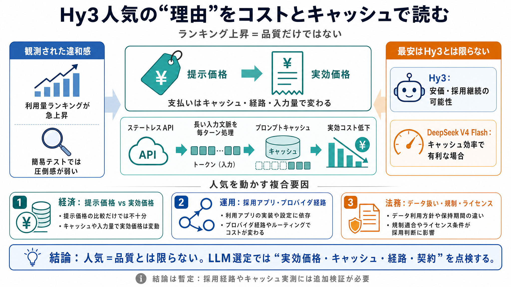

DeepSeek open-sources V4 large language model series - SiliconANGLE
There’s the flagship V4-Pro and a smaller model called V4-Flash that trades off some output quality for lower hardware u…

ランキングは“品質”だけじゃない
OpenRouterの利用量ランキングで、Hy3 previewが急上昇する一方で研究ベンチほどには“圧倒的”に見えない理由を、コスト・キャッシュ・運用要因から推測します。
不整合に注目
Hy3 previewは、OpenRouterのモデルランキングで急上昇しつつ、Claude Opus 4.7 や GPT 5.5 のような上位クラスへ“追いついた魔法”とは言いにくい、という点が主問題です。
利用量ランキングが極端に上位へ。
簡易テストでは“圧倒”感が弱い。
同じ看板でも
LLM APIは「提示価格」だけでは決まりません。会話文脈（入力トークン）が繰り返し処理され、プロンプトキャッシュが効くかで“支払う実効価格”が変わります。
ステートレス前提
LLM APIは基本的にステートレスで、各ターンで文脈の入力トークンが再処理されやすい構造です。そのため入力トークン比率が高い用途ほど、キャッシュ効率が価格差に直結します。
会話のトークンを毎ターン再処理。
過去入力を再利用（プロンプトキャッシュ）。
キャッシュ読み取りコストがプロバイダで異なる。
人気＝複合要因
著者の視点は、Hy3の人気を「品質の一人勝ち」で説明せず、価格・キャッシュ・提供体制・プロモーション効果・ライセンス等の複合で理解しようとすることにあります。
提示価格 vs 実効価格（キャッシュで変動）。
採用先アプリや採用経路（プロバイダ）で結果が歪む。
初期“無料”の痕跡
Hy3 previewは無料SKUから有料SKUへ移行後も利用が大きく下がっていないように見える、とされます。無料で価値があるなら、課金開始で離脱が起きやすいからです。
無料期間に獲得した利用者が継続利用。
大口アプリ側の運用価値（ロスリーダー）で吸収。
最安は別かも
実効価格で見ると、最安で有利なのはHy3ではなくDeepSeek V4 Flashのほうになり得る、と提示されています。特にDeepSeekの経路ではキャッシュ効率が極端に良い可能性があります。
「安いから勝った」を単純化するとズレる。
キャッシュ読み取り比率が低く実効価格が下がり得る。
提示価格の罠
同じモデルでも、キャッシュヒット率やキャッシュ読み取りコスト、経路（プロバイダ）で実効価格が変わります。だからランキングの上振れは、必ずしも品質差ではありません。
文脈を長く使うほど差が開く。
効けばコストが落ちる。
キャッシュ読取コストが変動。
推測の組み立て
著者は、Hy3の人気理由を単一因子にせず、少なくとも次の複合で起きている可能性を示します（ただし“完全には特定できない”と明言）。
無料→有料で下がらない＝損失吸収の示唆。
特定のプロバイダ構成（例：Hy3が単一紐づきの可能性）。
契約は“性能”より強い
DeepSeekが中国企業であることによるデータ取り扱い・法務・規制面の懸念が、実利の普及を左右し得るとされます。技術的に良くても採用されないことがあります。
データ送信・支払い情報・学習方針などの論点。
制約がランキングに“品質以外のバイアス”を作る。
確からしさに限界
記事は非科学的な簡易テストや推測に依存し、どのアプリがHy3を採用し、どのプロバイダ経路で、キャッシュがどれだけ効いたかの実測が不足しています。したがって結論は“暫定”です。
Hy3の強さがどこまでか要追加検証。
特定アプリの採用経路が不明。
キャッシュ実効効率の比較が未提示。
次に見るべき軸
Hy3が“すごい”かを決めるのが主眼ではなく、LLM選定が実効コスト・運用要件で歪む現実を可視化する価値があります。読む側は「価格・キャッシュ・経路・ライセンス」を点検しましょう。
実効価格（キャッシュ含む）／経路／契約・規制。
人気＝品質ではないと前提化する（バイアスを警戒）。
参照元（想定）
以下は、この記事内容を追う際に参照するべき情報源の“種類”です（原文・OpenRouter公開データの確認を推奨）。
モデル別ランキング/利用実績の公開ページ。
（英）Model ranking / usage data入力トークン課金、キャッシュ（prompt cache）仕様。
（英）prompt caching / token-based pricingThere’s the flagship V4-Pro and a smaller model called V4-Flash that trades off some output quality for lower hardware u…
Due to the company’s role as an intermediary between users and the LLM APIs, OpenRouter has robust, representative data …
[See more comments](https://www.linkedin.com/signup/cold-join?session_redirect=https%3A%2F%2Fwww%2Elinkedin%2Ecom%2Fpost…
# DeepSeek V4 in vLLM: Efficient Long-context Attention. We are excited to announce that vLLM now supports the DeepSeek …
| | | | --- | | minimaxir 17 hours ago | parent | context | favorite | on: DeepSeek makes the V4 Pro price discount pe…